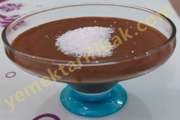

Supangle
Kullanılan Malzemeler
1 litre süt
1 çay bardağı un
2 yemek kaşığı nişasta
3 yemek kaşığı kakao
50 gr çikolata
1 yemek kaşığı tereyağı
1 bardak soğuk su
Supangle Yapılışı
Kullanılan Malzemeler
1 litre süt
1 çay bardağı un
2 yemek kaşığı nişasta
3 yemek kaşığı kakao
50 gr çikolata
1 yemek kaşığı tereyağı
1 bardak soğuk su
Supangle Yapılışı
Kullanılan Malzemeler
3.5 su bardağı un
Yarım su bardağı sıvı yağ
Yarım su bardağı eritilmiş margarin
Yarım su bardağı toz şeker
1 tatlı kaşığı karbonat
1 su bardağı yoğurt
1 yumurta sarısı
1 çay bardağı iri doğranmış ceviz
Şurubu için:
3 su bardağı toz şeker
3 su bardağı su
Yarım limon suyu
8-10 kişilik tariftir
Cevizli Hamur Tatlısı Yapılışı
Kullanılan Malzemeler
500 gram tuzsuz peynir Süt kesiği veya lor
3 adet yumurta
3 çorba kaşığı un
1 paket tereyağı veya margarin
Alabildiğince irmik
Hindistan cevizi
Şerbeti için
4,5 su bardağı şeker
4 su bardağı su
1/4 limon suyu
1 paket kabartma tozu
Kemalpaşa Tatlısı Yapılışı
Kullanılan Malzemeler
Keki için:
4 yumurta
1 su bardağı şeker
Yarım çay bardağı ılık su
1 buçuk su bardağı un
1 paket vanilya
1 paket kabartma tozu
1 çimdik tuz
Şerbeti için:
1 paket krema
3 yemek kaşığı şeker
4 su bardağı süt
Kremşanti için:
Kremşanti
1 bardak soğuk süt
Karamel sosu için:
1 su bardağı şeker
1 yemek kaşığı tereyağı
1 paket krema
Karamelli Trileçe Yapılışı
Kullanılan Malzemeler
Muhallebi için:
1 litre süt
1 su bardağı toz şeker
3 yemek kaşığı buğday veya mısır nişastası
yarım çay bardağı elenmiş un
1 paket vanilya
1 tatlı kaşığı tereyağı
Üzeri için:
1 adet muz
Hindistan cevizi
Muhallebi Yapılışı
Kullanılan Malzemeler
100 gr tereyağı
1 çay bardağı sıvı yağ
2 su bardağı un
yarım çay bardağı çam fıstığı (isteğe göre azaltılabilir/arttırılabilir)
Şerbeti için:
3 su bardağı süt
2 su bardağı şeker
Sütlü Un Helvası Yapılışı
Kullanılan Malzemeler
1 paket hazır yufka
200 gr. tereyağı
muhallebisi için:
2 yumurta
1 çay bardağı şeker
yarım çay bardağı un
3 su bardağı süt
yarım çay bardağı nişasta
1 paket vanilya
1 çay kaşığı karabiber(isteğe bağlı ben koymadım)
Şerbeti için:2.5 su bardağı şeker
3 su bardağı su
Laz Böreği Yapılışı
Kullanılan Malzemeler
5 yumurta
1 su şeker
3 yemek kaşığı toz badem veya fındık
1 kabartma tozu
1 vanilya
5 yemek kaşığı tepeleme un
Sütlü Şerbeti için:
3 su bardağı süt
2 paket krema
yarım çay bardağı toz şeker
Kreması için:
2 paket kremşanti
2 bardak soğuk süt
Karameli için:
1,5 su bardağı toz şeker
1 su bardağı su
Triliçe Tatlısı Yapılışı
Kullanılan Malzemeler
300gr.hazır fırınlanmış kadayıf
Şerbeti için:
3 su bardağı şeker
5 su bardağı süt
1 yemek kaşığı tereyağı veya margarin
Üzeri için:
1 su bardağı ceviz
Sütlü Kadayıf Tatlısı Yapılışı
Kullanılan Malzemeler
200 gr margarin
2 yumurta
2 yemek kaşığı sıvı yağ
1 çay bardağı toz şeker
2 yemek kaşığı irmik
1 paket kabartma tozu
1 paket vanilya
3 su bardağı un
Bulamak için: 1 su bardağı kadar irmik
İç Malzemesi için:
Yarım su bardağı ceviz veya fındık içi
Şerbeti İçin:
2.5 su bardağı toz şeker
3 su bardağı su
2 damla limon suyu
Balparmak Tatlısı (Cevizli) Yapılışı
Kullanılan Malzemeler
1 su bardağı irmik
1 su bardağı şeker
Yarım paket margarin veya 3 kaşık tereyağı
1 çay bardağı kırılmış fındık
2 su bardağı süt
Sütlü İrmik Helvası Yapılışı
Kullanılan Malzemeler
1 paket margarin
1 çay bardağı sıvıyağ
1 çay bardağı yoğurt
2 yumurta sarısı(beyazı üzeri için kullanılacak)
1 kabartma tozu
Aldığı kadar un
Şerbeti için:
3,5 su bardağı şeker
4 su bardağı su
Saray Tatlısı Yapılışı
Kullanılan Malzemeler
4 tane orta boy ayva
1 bardak su
1 su bardağı şeker
1 çay kaşığı tarçın
2 paket fındıklı kurabiye veya 1 paket kakaolu büskivi
1 çay bardağı iri kıyılmış ceviz
Muhallebisi için:
1 litre süt
5 kaşık un
6 kaşık şeker
1 tane yumurta sarısı
2 yemek kaşığı tereyağı veya margarin
Muhallebili Ayva Tatlısı Yapılışı
Kullanılan Malzemeler
1 Kilo Havuç
1 Paket Petibör Bisküvi
1 Su Bardağı Şeker
1 Yemek Kaşığı Margarin veya tereyağı
1 Su Bardağı kıyılmış Ceviz
1 Paket Vanilya
1 su bardağı Hindistan Cevizi
Havuçlu Cezerye Yapılışı